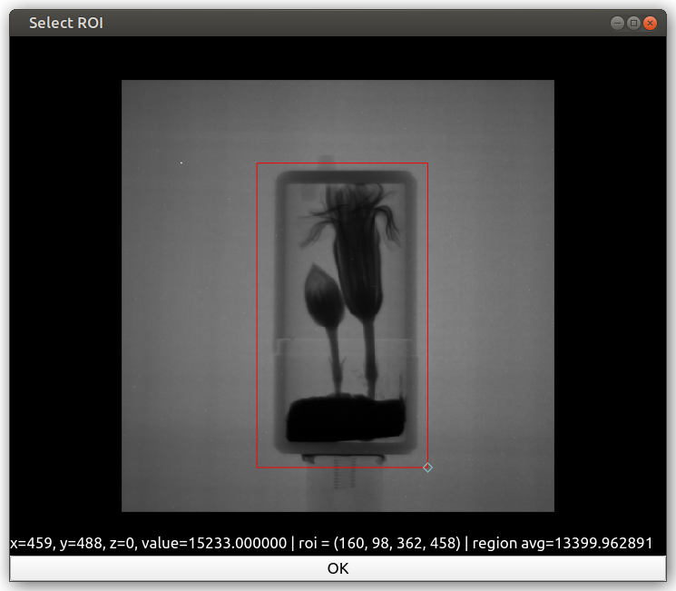

Operations Window#
Selecting the Operations option in the Workflow menu opens the operations dialog, this is used for applying filters to image stacks.
Operations may be applied to image stacks of any type (i.e. projection, sinogram, reconstruction), they are essentially just image filters and do not directly care about the type of image.

Here you can select the type of filter and the image stack you wish to apply it to, properties of the selected filter are automatically shown in the Filter Properties section.
The [?] button next to filter selector will open a webpage with an explanation of the filter parameters.
The right hand panel shows a slice from the original image stack, a preview of the filter applied to the slice, and the pixel intensity difference. Below the previews is a slider that can be dragged horizontally to scroll through previews for each slice of the stack. At the bottom of the right hand panel, a histogram of pixel values before and after is shown. The image views can be navigated as described in the Image view help page.
Green pixels in the after preview indicate that a value has changed. Red pixels indicate that there are negative values in the result. Note that the negative values overlay is placed on top of the image difference overlay, so if a pixel has changed and is also negative then it will simply appear as red. The negative values overlay may also highlight pixels that were negative before and after the filter was applied.
There are several tickboxes to customise the behaviour of the preview area.
- Link Images
Links the pan and zoom between the before, after and difference views
- Overlay difference
Highlights pixels that have changed in the after image
- Invert diff image
Invert the colours used in the difference view
- Lock Scale
Lock the colour scale when adjusting filter parameters
- Lock Zoom
Lock the pan and zoom when adjusting filter parameters
The Image control in the Preview section can be used to select the index of the image in the stack that is used to generate the preview.
Previews are automatically updated when parameters are changed. For filters that take a long time to apply even on a single image it is worthwhile to disable the Auto Update option and trigger preview updates manually using the Update Now button.
For filters that use a region of interest as a parameter (namely Crop Coordinates and ROI Normalisation) the ROI is selected using the controls on the stack visualiser for the selected image stack (as shown in the screenshot below).
{kind=link}
Pressing Apply applies the filter to every image in the stack, replacing the data in the stack. For some filters it is also possible to Apply to all stacks if required.
It is normal for this to take a significant amount of time for a large stack of images.
If Safe Apply is enabled then the filter will be applied to a copy of the data and a comparison window will be shown to select whether to keep the filtered version. The application of a filter can not be undone.